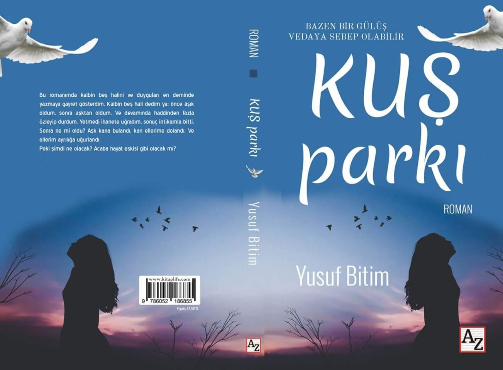
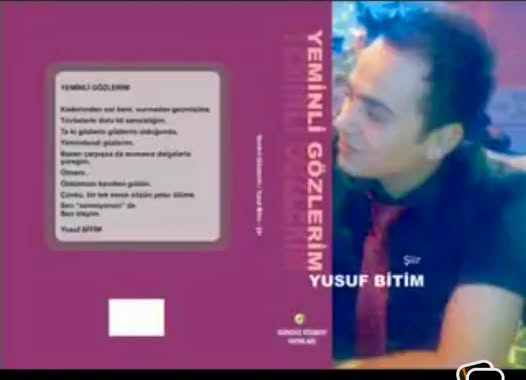
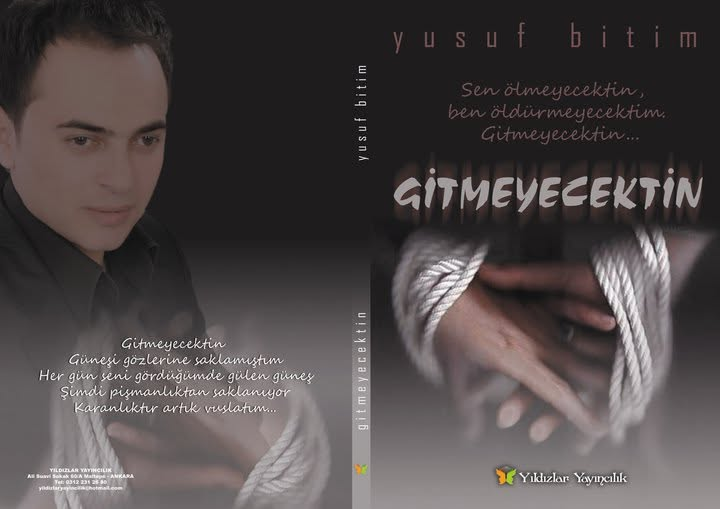
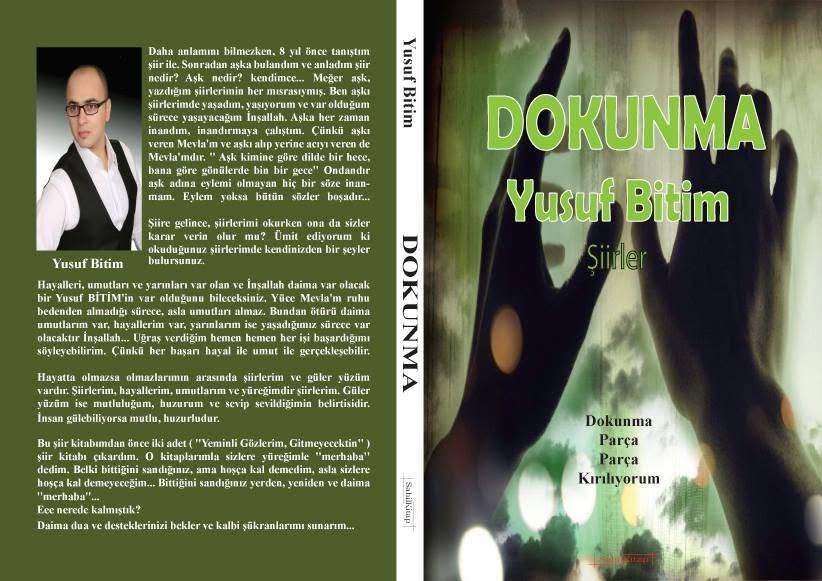
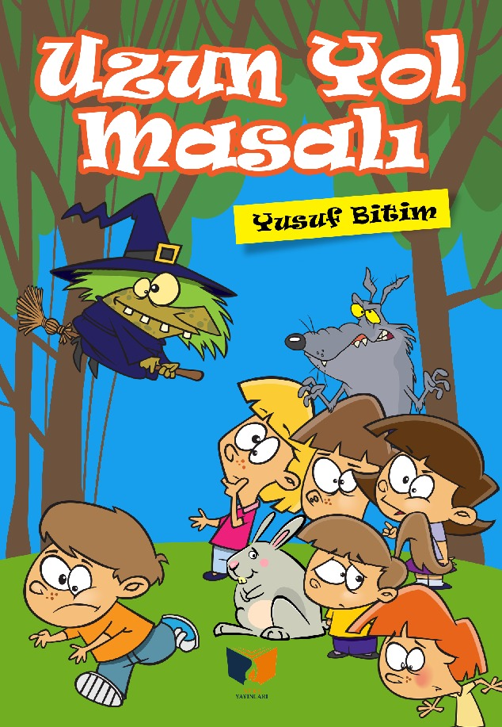

📖 Kuş Parkı (Roman)
Yusuf Bitim'in büyük ses getiren ve Azerbaycan Milli Kütüphanesi koleksiyonuna dahil edilen özel roman eseri.
Türü: Roman
Yayınevi: Az Kitap
Basım Tarihi: 2018
Sayfa: 160
Dil: Türkçe

📖 Yeminli Gözlerim (Şiir Kitabı)
Duygusal derinliği yüksek, okuyucunun kalbine dokunan harika bir şiir derlemesi.
Türü: Şiir
Yayınevi: Gündüz Kitapevi
Basım Tarihi: 2008
Sayfa: 71
Dil: Türkçe

📖 Gitmeyecektin (Şiir Kitabı)
Ayrılık, özlem ve sevda temalı şiirlerin asil bir dille kaleme alındığı özel eser.
Türü: Şiir
Yayınevi: Yıldızlar Yayıncılık
Basım Tarihi: 2010
Sayfa: 112
Dil: Türkçe

📖 Dokunma (Şiir Kitabı)
İnsan ruhunun derinliklerine yolculuk yaptıran, aşkın en saf halini anlatan şiir kitabı.
Türü: Şiir
Yayınevi: Sahil Kitap
Basım Tarihi: 2014
Sayfa: 112
Dil: Türkçe

📖 Uzun Yol Masalı
Aynı zamanda animasyon filme de dönüştürülen, hem büyüklere hem küçüklere hitap eden masal eseri.
Türü: Masal
Yayınevi: Ateş Yayıncılık
Basım Tarihi: 2022
Sayfa: 64
Dil: Türkçe